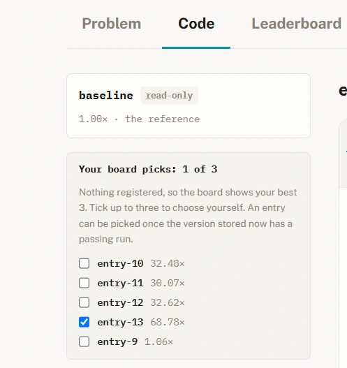
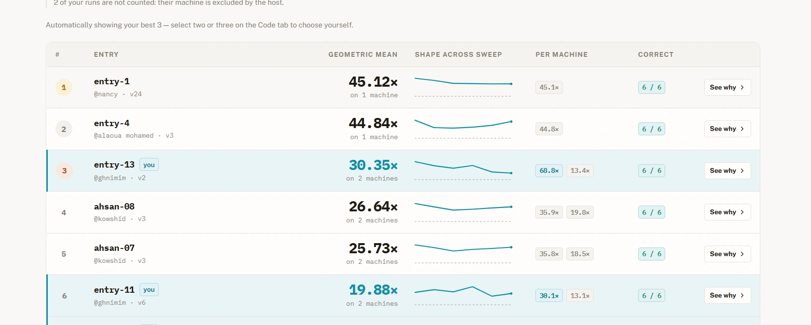

Recorded speedup against the course baseline on one CPU.
2.28 s epoch · 56.49 s baseline · Reference-loss check← Selected workML Systems
C++ / ML systems engineering
ML Systems
Optimization
I optimized the computation behind machine learning, from a sparse linear-algebra kernel to a complete autoencoder training epoch. I kept correctness central while changing how data and work move through the CPU.
C++AVX · SIMDOpenMPMemory layout
Recorded single-machine run score, with 6/6 correctness checks.
Separate workload and scoring scope. These speedups are not directly comparable.01 / Complete training epoch
A fixed model. A faster training system.
I accelerated one epoch of a 13,714 → 256 → 32 → 256 → 13,714 autoencoder. The architecture, Adam optimizer, and reference-loss target stayed fixed.

Use sparsity where it exists
The 2,700 × 13,714 input matrix is only 6.17% nonzero. I skipped zero-valued work in the input layer, while treating dense reconstruction as a separate bottleneck.
Bring computation closer to the data
I separated weights from Adam moments, blocked the reconstruction layer, and used width-16 AVX panels to keep related forward and gradient work together.
Keep gradient work in registers
I retained 16 gradient outputs in registers and used parallel execution. The optimization target was the training computation, with the reference loss preserved.
56.49 s → 2.28 sRecorded baseline and optimized epoch
Intel i5-11300H · 4 threadsFive timed runs: 2.22–2.40 s
Recorded course measurements from the existing project record, not a cross-hardware performance guarantee.
02 / Sparse kernel foundation
Make memory movement part of the algorithm.
I optimized a sparse linear-algebra workload with packed CSR storage, cache-aware tiling, and vectorized CPU execution.
Storage
Pack the nonzero work
I used CSR and 64-byte alignment to avoid dense traversal over zeros and organize the memory path.
Locality
Tile the dense dimension
I used K-column tiles and specialization to keep active data closer to cache instead of repeatedly traversing the full output width.
Execution
Parallel rows. Vectorized tiles.
I distributed row work with OpenMP static scheduling, applied SIMD within tiles, and used prefetching to support the memory path.

68.78×Recorded single-machine run
The supplied evidence shows 6/6 correctness. The combined leaderboard screenshot reports a 30.35× geometric mean across two machines; I keep that aggregate separate from the 68.78× run score.
View the aggregate leaderboard evidence

03 / Engineering judgment
Optimize the bottleneck. Verify the result.
The same principles connect both studies, but each workload needs its own measurement.
Data movement
Layout before instructions
I focused on packing, alignment, and locality before relying on vectorization. Faster arithmetic cannot compensate for a poorly organized memory path.
Correctness
Preserve the numerical target
I treated output correctness and reference-loss checks as constraints. A faster run only matters when it computes the required result.
Measurement
Report the scope
I separate a single-machine run from a multi-machine aggregate, and kernel speed from full-epoch speed. Hardware and workload are part of every benchmark claim.